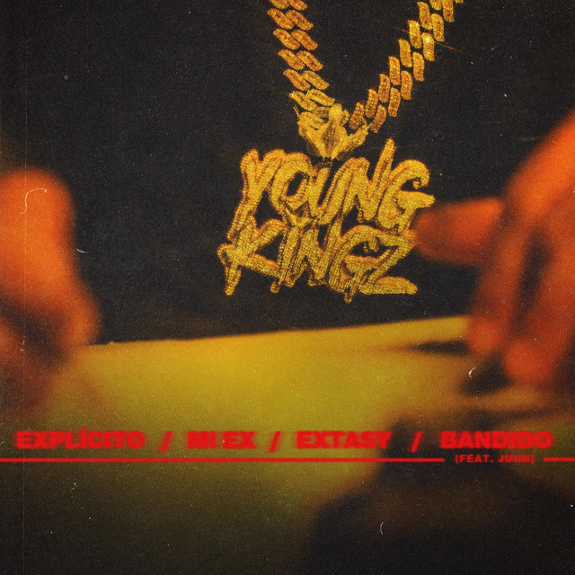
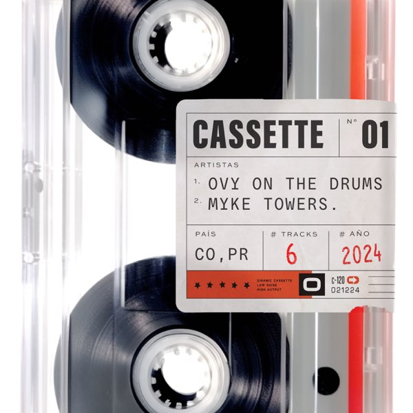

Para Mi Ex (2020)
 Con su primera nominación Latin Grammy por su álbum Easy Money Baby, el puertorriqueño Myke Towers cierró el 2020 con el broche de oro por su EP Para Mi Ex. Su single más reciente ha sido Bandido junto a Juhn y sumando los tres temas restantes: Explícito, Extasy y Mi Ex.
Tracklist:
Escuchar en Spotify
Sweet & Sour (2023)

El puertorriqueño ha querido deleitar a sus seguidores con su primer gran lanzamiento del 2023, que es nada más y nada menos que su EP Sweet & Sour. El anuncio del lanzamiento de este EP fue cuando las tres canciones ya estaban en el mercado.
Tracklist:
Escuchar en Spotify
Icy Hot (2023)
Con "Icy Hot", el cantante puertorriqueño sigue experimentando con sonidos nuevos e innovadores combinados con su juego de palabras, demostrando de nuevo su capacidad para evolucionar a través de su música y consolidar su notoriedad mundial. La explosiva producción de cuatro canciones mezcla historias sensuales de amor y lujuria.
Y explorando un reino más oscuro y lleno de nostalgia con el focus track del EP "Solo $exo", Myke monta versos fuertes sobre el tema influenciado por el trap, resaltando un sintetizador misterioso e hipnotizador.
En "Gallery Dept." y "En Nadie", el rapero muestra su capacidad para crear música que resuene tanto con el público mundial como con el de culturas específicas, a la vez que combina elementos fundamentales del hip hop con ritmos sensuales del reggaetón.
Towers adopta un enfoque más alegre y optimista en el último tema del EP, "Postre", en el que interpreta versos coquetos sobre melodías vibrantes y ritmos acelerados.
Tracklist:
Escuchar en Spotify
Cassete 01 (2024)
